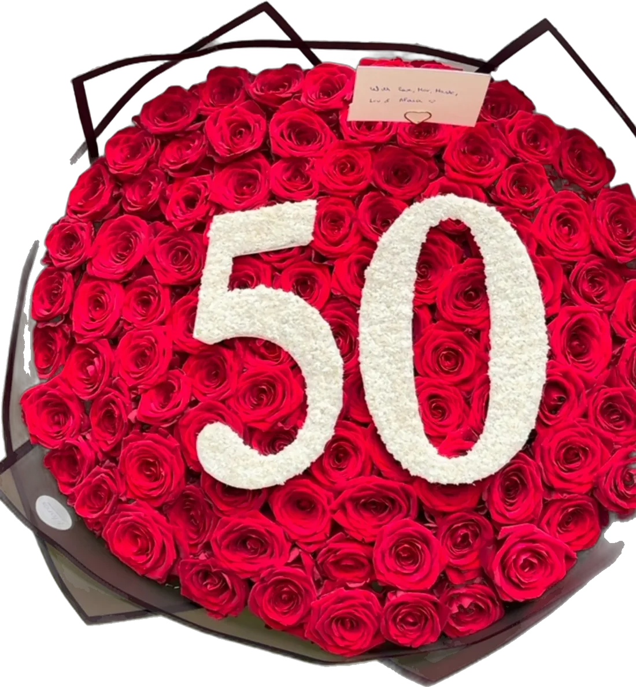
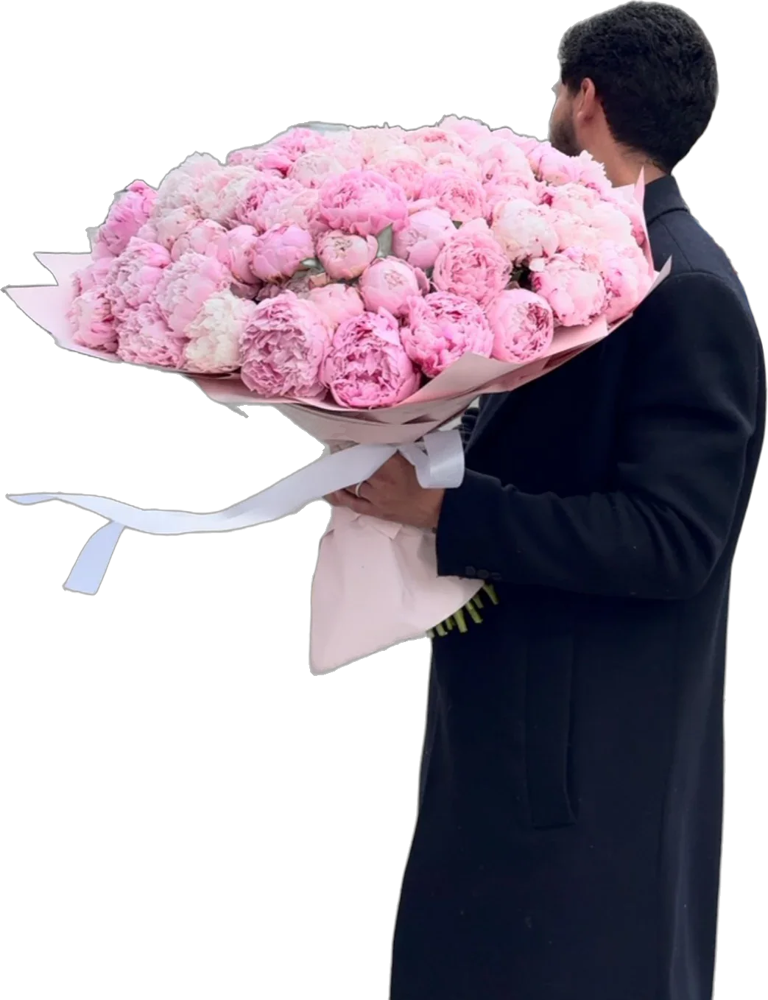
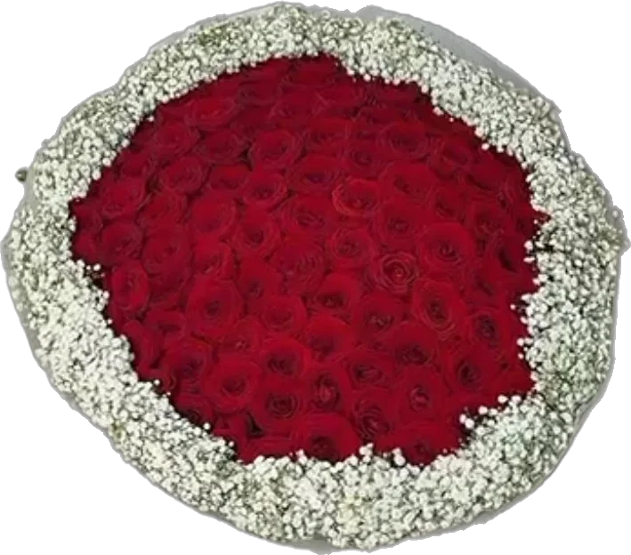
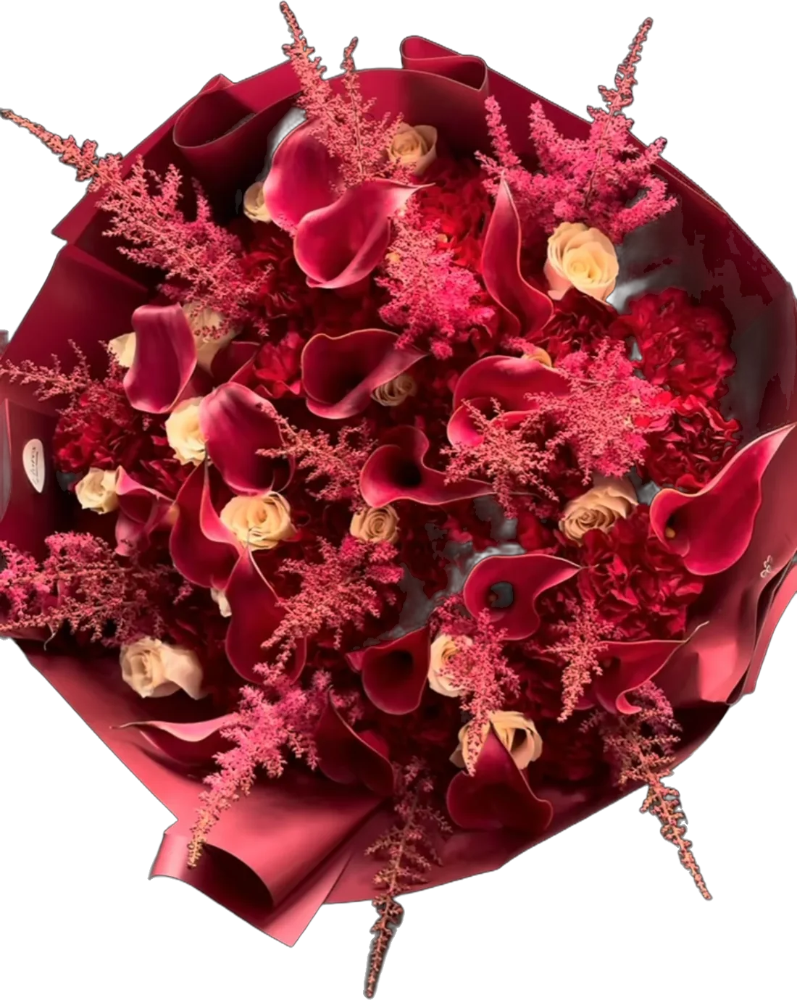
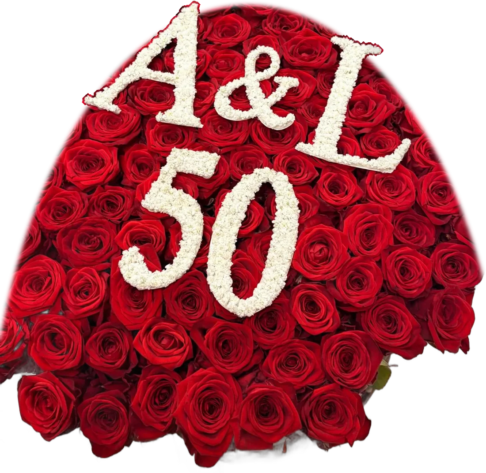
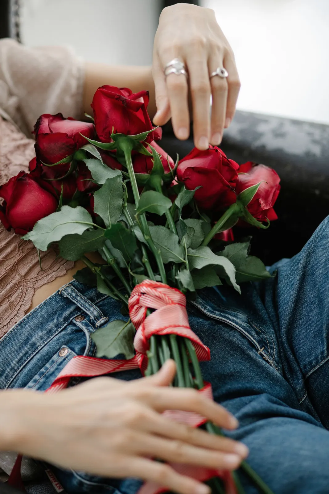
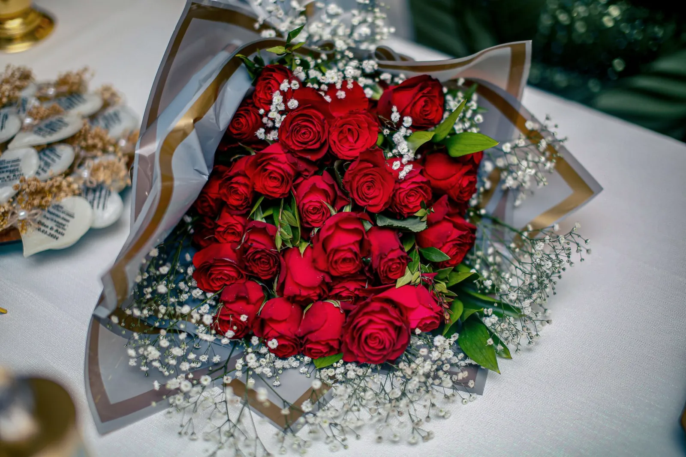

Verjaardag

Een cijfer in rozen
Een 18, een 30 of een 50 in wit gipskruid, midden tussen de rode rozen. Zo weet iedereen meteen wat er te vieren valt.
Elk cijfer kanVraag aan
Armen vol pioenen, honderd rode rozen met een rand van gipskruid, jullie namen in wit bovenop een mand. Elk boeket binden we met de hand, en ook voor een bestelling op het laatste moment kan je bij ons terecht.

Dit maken we het vaakst. Zie je iets dat je bevalt, stuur ons dan een berichtje en we passen het aan op wie het krijgt.

Een 18, een 30 of een 50 in wit gipskruid, midden tussen de rode rozen. Zo weet iedereen meteen wat er te vieren valt.

Rond gebonden, met een dikke rand gipskruid eromheen. Het boeket voor een aanzoek, een trouw of gewoon omdat zij het verdient.

Calla's, rozen en zachte pluimen in één diepe tint, verpakt in hetzelfde rood. Jij kiest de kleur, wij zoeken de bloemen erbij.
Iets anders in gedachten? Stuur een foto van wat je mooi vindt. Stuur je voorbeeld

Voor een aanzoek, een trouw of een jubileum maken we het boeket helemaal van jullie. Vertel ons wat erop moet en we zorgen dat het klopt.
Geen formulieren of webshop. Je stuurt ons een WhatsApp, wij denken mee en zorgen dat het boeket er op tijd is.
Voor wie, voor welke gelegenheid, in welke kleur. Een foto als voorbeeld helpt altijd.
Met de hand, met het lint, de letters of het cijfer dat je vroeg.
We brengen het boeket tot aan de deur, ook bij een bestelling op het laatste moment.

"My favourite place to place an order. Also they are super helpful with last minute orders. And every flower is 10/10. The customer service here is also what makes it a great experience to purchase from. Definitely worth it!"
"Absolutely beautiful roses! 🌹 The bouquet is stunning, with vibrant red roses that look even more beautiful in person. The flowers were carefully arranged, and you can truly see the love and attention to detail in the presentation."
"10/10 best place to get flowers from. I got my self 101 flowers they look so good and price is also good for the quality!"
Stuur ons de datum, het adres en wat je in gedachten hebt. We laten snel iets weten.

Ook voor een bestelling op het laatste moment kan je bij ons terecht. Stuur een bericht en we kijken wat er nog lukt.
Vraag het meteenIk maakte deze demo voor jullie om te tonen wat er kan. Na een kort gesprek maak ik er iets veel persoonlijkers van, helemaal naar jullie wens.
Vrijblijvend. Ik kom langs of we bellen.
Op maat, op jullie eigen domein.
Geen voorschot. Jullie betalen pas als alles klaar is.
Hosting, domeinnaam en kleine wijzigingen, zoals nieuwe openingsuren.
Omdat een voorbeeld meer zegt dan een mail. Zo zien jullie meteen wat er kan, en het kost jullie niets.
Nee. Het gesprek is vrijblijvend. Vinden jullie het niks, dan is het daarmee gedaan.
Na ons gesprek staat jullie site binnen 10 tot 14 dagen online.
Zeker. Jullie domeinnaam kan gewoon blijven, de nieuwe site komt in de plaats van de oude.
Nee, dat doe ik op basis van ons gesprek. Eigen foto's zijn mooi meegenomen, maar niet nodig om te starten.